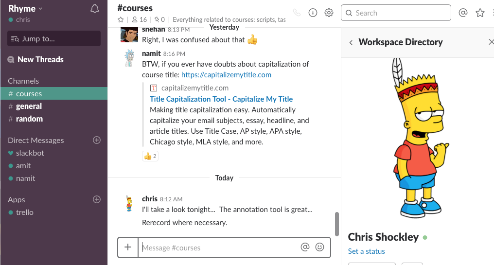

Slack is to project communication what dropbox is to sharing documents. A formal definition is a web based software that serves as a communication hub or those invited.
These guys got it right too. I recently started a consulting gig where I was introduced to the app. I found that the CEO on down to the developers were incredibly active – in fact they didn’t use email they just used the message board to communicate. I will go over how it works and the pros and cons of the app in this blog.
Basically it’s a gigantic message board or a group text, but with features that make it more efficient and easier to read and work. Let’s walk through some of the features though that set it apart.
If you look at the left hand side (pic below) you can see a Channels followed by # courses, # general, and # random. Those are different topics that one could post to. So for example say I have a general comment. I would highlight that and then type out my message. Everyone that is invited to that room will be able to see what I write. To write something that is directed at a specific person I would type @chris for example and that person would be notified that there is a message directed at them. Again, everyone that’s in the room has access to the message, but because it’s directed at someone they would know that it’s not a conversation intended for them.
This is great because you can see all the conversations and even though they may or may not be directed at you they might have some information for you to glean. Or in inverse you can just ignore it all together. For the project manager though this is great because they can see what everyone is talking about and add color and/or direction as necessary.
If you look below on the left hand side you can see a direct message area. If you wanted to send something private you surely could there. Same idea. You @person and send the message.

Well you can scroll up or you can use the search bar (upper right of the picture above). Anything with the keyword will show up (similar to searching email).
Yep. Just hit the plus sign next to the text box and add your attachment.
From planning a vacation with family members in different cities to working on a work or school project this app rocks. It beats sifting through email messages, following threads, etc. It’s less formal so people are more willing to share thoughts/observations. Getting a message doesn’t have the same ‘oh crap another email’ feel to it. It’s quicker and easier to write as you’re not as worried about grammar, etc. in the event your email gets passed around (time saver too). It’s easy to feel connected to the project because there is an ongoing conversation. And from a project manager’s perspective it’s nice to see what different issues, etc are coming up and adding color/direction as needed.
There are some cons of course. The people using it need to learn just one more technology (even though it’s as intuitive as putting on your shoes). But still that’s a con. Also if you did want to forward something to someone via email then you would have to copy and paste into an email. It could be difficult to follow a single thought if you are not named (i.e., trying to understand someone elses issues).
This is the great part. For most people and projects the Free plan covers. Sort of like Dropbox. Once you get to 10,000 messages there is a monthly charge of $6.67 per user. But until then it’s free.